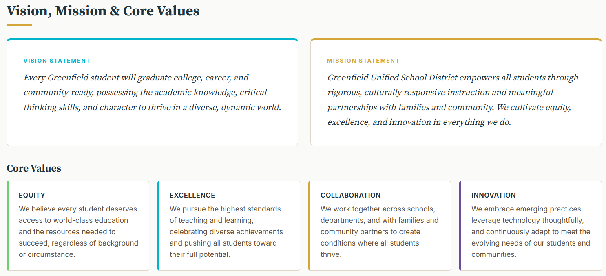
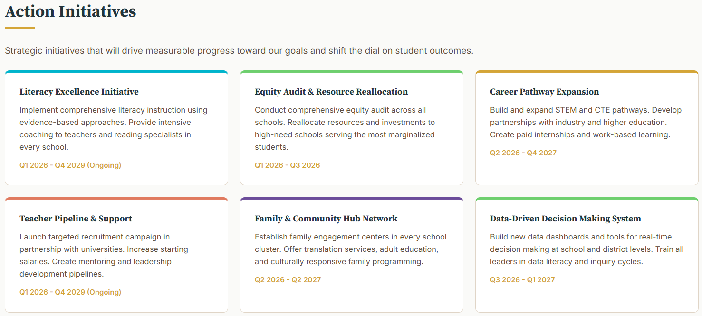
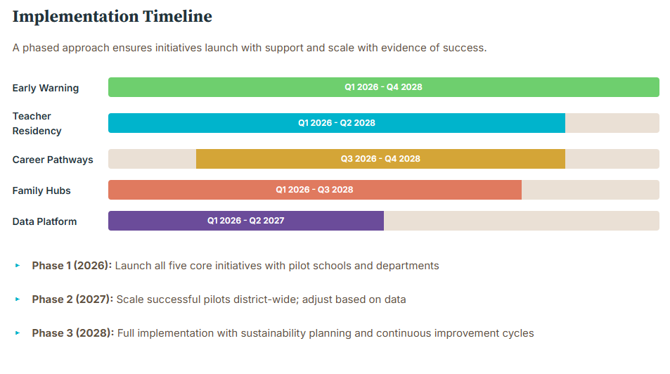
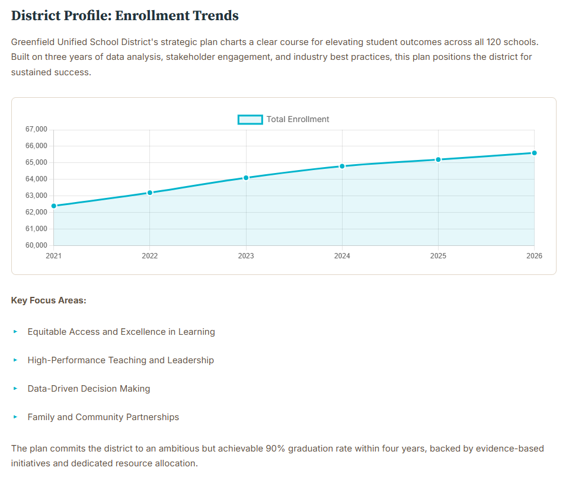
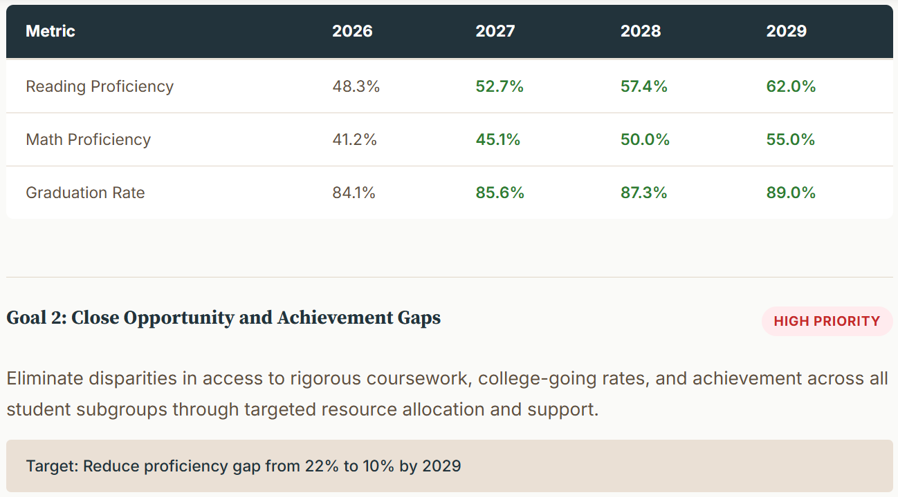
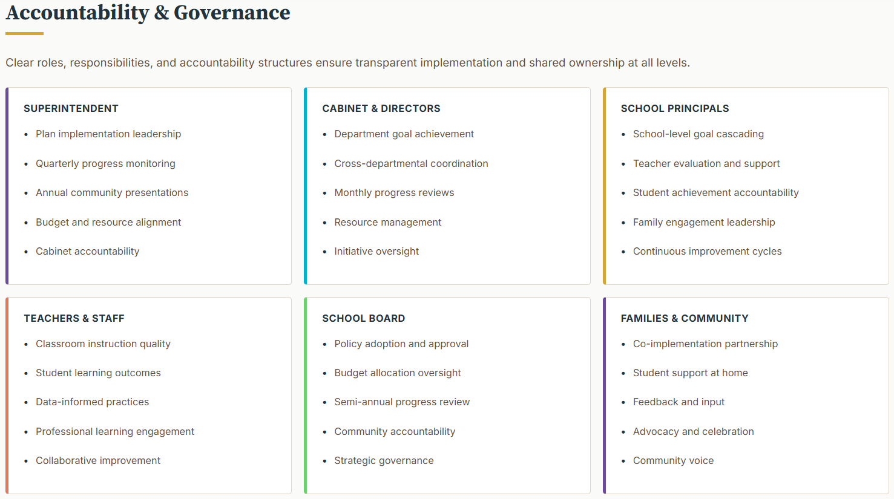
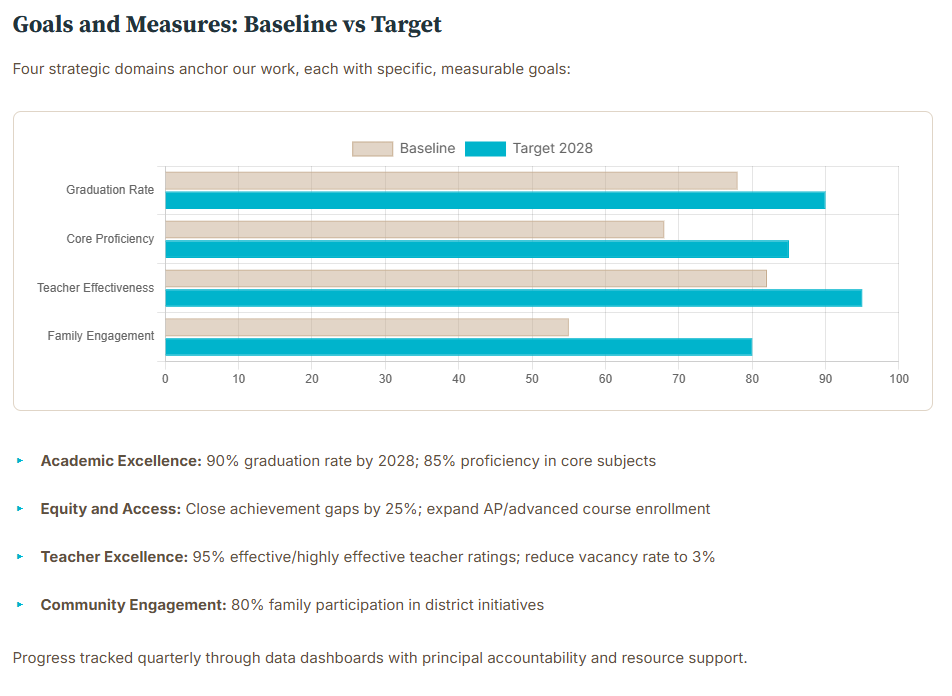

Strategic planning shouldn't take 18 months and $200,000. Our guided, research-based framework helps you build a professional plan in weeks, not months.
Get started free: Steps 1–7 included. Upgrade to enterprise for access to the full strategic plan builder and Strategic School!







Built for the districts and schools shaping the future
Built on evidence from leading districts and education research. No guessing. No reinventing the wheel.
Our tool walks you through each phase. Clear instructions, helpful prompts, and best practice examples.
Export to Word, PDF, or share directly. Board-ready documents your team can use right away.
Designed by people who understand K-12 leadership. District-level strategy with school-level alignment through Strategic School.
Strategic planning is a team effort. Our builder gives your leadership team the structure to work through each phase, then bring the right stakeholders into the conversation at the right time.
Answer guided questions about your district's demographics, challenges, vision, and priorities. This is your starting point for meaningful stakeholder conversations.
Choose strategies and initiatives from research-based options. Customize everything to your needs. Then meet with stakeholders to refine and get buy-in on the plan.
Get a professional, complete strategic plan document ready to share with your board, community, and school leaders. Then align schools with Strategic School.
From the district's strategic plan to every school's improvement plan, with a live dashboard connecting them. That's the Strategic District ecosystem.
Build your district's full strategic plan with a guided, 14-step framework. Vision to implementation timeline, all in one place.
See your plan come to life. Track goal progress, strategy implementation, and school alignment in real time.
Every school builds its own improvement plan, directly aligned to the district's strategic plan. Central office and buildings finally on the same page.
Stop wasting time and money on traditional planning. Build your strategic plan in weeks with our proven framework. Every dollar saved goes back to teachers and kids.
Get Started Free